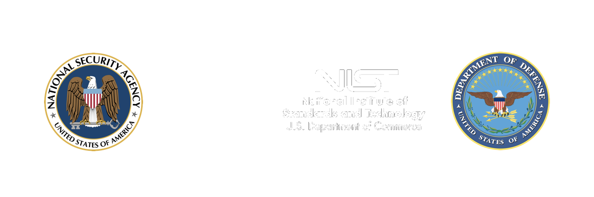

Leave No Data Behind
Protecting personally identifying information, financial records, health records, intellectual property and even National Security Information online via network firewalls and virus detection gets all the attention, however, perhaps the most dangerous source of sensitive information is remnant data contained on retired electronic storage media. A loss can result more than a nasty lawsuit and a tarnished reputation; if information were to fall into the wrong hands; there are multiple Federal and State laws that mandate very serious penalties, per instance, if broken.
Does your organization have a destruction policy in place? If not, we can help you develop one that is fully compliant utilizing accepted best practices.
Already have a complaint policy in place? ZER0trace offers the full array of sanitization and destruction services that comply with the Purge and Destroy methodology published by the National Institute for Standards in Technology, NIST Special Publication 800-88, Revision 1. Additionally, we offer even more rigorous services that comply with the NSA/CSS Policy Manual 9-12 for physical destruction. We operate state-of-the-art erasure, degaussing and shredding systems, both mobile and plant-based, to serve our customers on the West Coast. Additionally, we maintain close strategic partnerships with peer data destruction vendors throughout the U.S and internationally to provide a single point of contact to transparently manage all of your destruction needs, regardless of location. We have a demonstrable record of success with projects ranging in size from a few drives up to entire data center decommissions.
Our Certification Speaks For Itself
